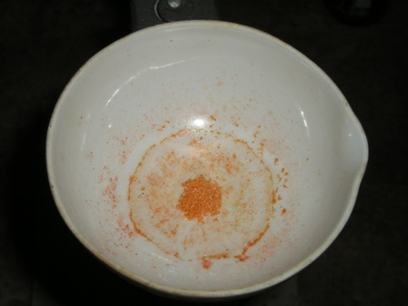
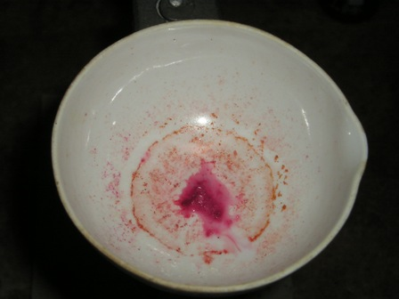
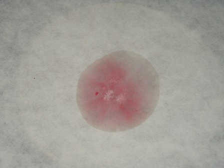
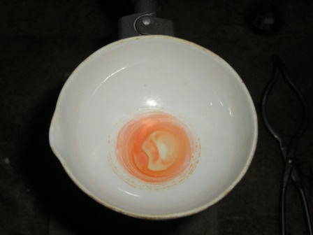
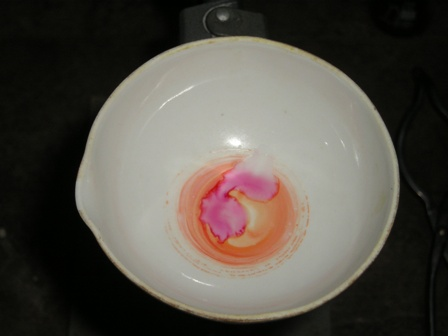
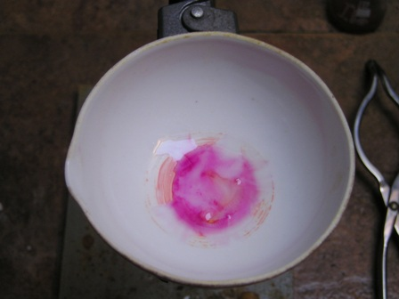

Eccoci finalmente alla fase sperimentale del saggio della muresside: cosa ci serve?
Un po' di caffeina e dei buoni ossidanti, come l'acqua ossigenata o un clorato alcalino, ed ammoniaca per concludere.
Il test è facilissimo e viene bene, fatto salvo naturalmente che nel lab ci sia ogni volta tutto ciò che occorre al caso in gioco (risolvere questo problema per un lab hobbistico di chimica organica è estremamente più difficile di quanto possa sembrare, ma questo è un altro discorso, al quale ho già accennato in passato).
Test 1
- porre in una capsula una piccola puntina di spatola di caffeina con circa 4-5 volte il suo peso di clorato di sodio o potassio, mescolare e ricoprire la miscela con un paio di ml di HCl concentrato.
Si ha svolgimento di cloro ed ossidazione della base xantinica.
Mettere la capsula in bagno d'acqua bollente e lasciar evaporare; si forma alloxantina giallo-arancio (mescolata a NaCl).
Aggiungendo un paio di gocce di ammoniaca si nota la colorazione rosso violacea del purpurato di ammonio, cioè della muresside.

Residuo dell'ossidazione con NaClO3

Aggiunta di qualche goccia di ammoniaca

Tracce di alloxantina su carta da filtro esposte ai vapori di ammoniaca
Test 2
- porre in una capsula una piccola puntina di spatola di caffeina e aggiungere 1 ml di HCl al 10% e 1 ml di acqua ossigenata al 30%.
Evaporare a bagnomaria come nel caso precedente, ottenendo un residuo giallo aranciato.
Con una traccia di ammoniaca diluita si ottiene l'intensa colorazione della muresside.

Residuo dell'ossidazione con H2O2

Aggiunta di un paio di gocce di ammoniaca diluita

Fase finale
Come si vede il test viene benissimo e la colorazione purpurea è molto evidente; chi non avesse a disposizione la caffeina potrebbe estrarne un po' dal tè (anche senza purificarla) e fare un test ancora più "ruspante" sul prodotto alimentare: oso sperare che qualche anonimo e incognito volontario prima o poi lo farà.
Per concludere, ringrazio l'amico Marco per avermi dato lo spunto per questo lavoretto in due puntate.
2 commenti